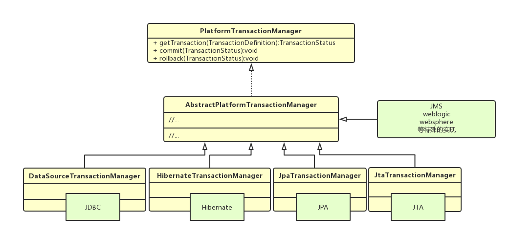
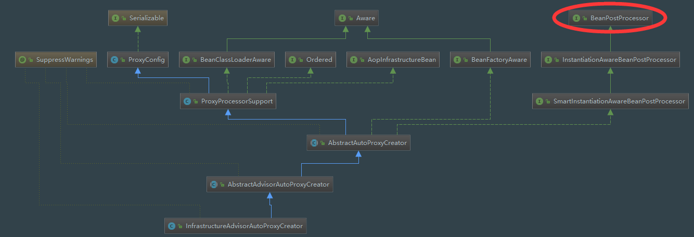

上一篇主要介绍了Spring事务的基本概念，包括基本流程、传播属性和隔离级别等，接下来将详细分析Spring事务源码，一步步了解Spring事务是如何实现的。
事务配置入口
从事务的配置入手
1 | <tx:annotation-driven transaction-manager="transactionManager"/> |
开启声明式事务，需要配置两个地方：
- 数据源dataSource，任何ORM的实现都要实现dataSource接口，因为必须拿到Connection对象；
- 事务管理器transactionManager，由Spring提供，管理所有的事务操作。
打开DataSourceTransactionManager
1 | public class DataSourceTransactionManager extends AbstractPlatformTransactionManager |
DataSourceTransactionManager是JDBC默认的事务管理器实现，它继承自AbstractPlatformTransactionManager，继续向上查找，发现其实现了PlatformTransactionManager接口
1 | public abstract class AbstractPlatformTransactionManager implements PlatformTransactionManager, Serializable { |
PlatformTransactionManager是啥？它是Spring事务的管理接口，除了jdbc的实现DataSourceTransactionManager外，Spring还提供了其他几种ORM的实现，如下：

顺着这个配置，可以找到定义tx:annotation-driven的xsd文件spring-tx.xsd，再通过其命名空间，从spring.handlers中找到对应的实现类TxNamespaceHandler。
1 | http\://www.springframework.org/schema/tx=org.springframework.transaction.config.TxNamespaceHandler |
TxNamespaceHandler
TxNamespaceHandler是Spring事务管理的核心功能，它允许使用xml或注解来配置声明式事务
1 | public class TxNamespaceHandler extends NamespaceHandlerSupport { |
Spring初始化时，会先加载init方法将解析器注册到parsers中，在解析xml时，根据标签从parsers中找到对应的解析器，使用委派模式进行解析
初始化时注册解析器到parsers中
1
2
3
4
5private final Map<String, BeanDefinitionParser> parsers = new HashMap<>();
//...省略
protected final void registerBeanDefinitionParser(String elementName, BeanDefinitionParser parser) {
this.parsers.put(elementName, parser);
}解析xml配置文件时，根据标签查找解析器
1
2
3
4
5public BeanDefinition parse(Element element, ParserContext parserContext) {
//查找解析器
BeanDefinitionParser parser = findParserForElement(element, parserContext);
return (parser != null ? parser.parse(element, parserContext) : null);
}1
2
3
4
5
6
7
8
9private BeanDefinitionParser findParserForElement(Element element, ParserContext parserContext) {
String localName = parserContext.getDelegate().getLocalName(element);
BeanDefinitionParser parser = this.parsers.get(localName);
if (parser == null) {
parserContext.getReaderContext().fatal(
"Cannot locate BeanDefinitionParser for element [" + localName + "]", element);
}
return parser;
}具体的解析实现委派给对应的解析器
xml解析
上文中，TxNamespaceHandler中支持两种事务配置方式：xml和注解，xml配置的范例如下，它对应的解析器为TxAdviceBeanDefinitionParser，用来处理事务的通知规则
1 | <tx:advice id="transactionAdvice" transaction-manager="transactionManager"> |
1 | //事务通知规则解析器 |
以上是解析xml事务通知配置的代码，接下来看注释方式的解析代码
注解解析
注解方式的配置，需要AOP的支持，AOP默认采用jdk动态代理实现，如果类没有实现接口，无法生成代理类，如果遇到此类情况，需要开启cglib代理的支持
1 | <tx:annotation-driven transaction-manager="transactionManager" proxy-target-class="true"/> |
注解解析器的实现为AnnotationDrivenBeanDefinitionParser
1 | class AnnotationDrivenBeanDefinitionParser implements BeanDefinitionParser { |
首先注册了TransactionalEventListenerFactory，然后获取mode属性，根据mode属性做进一步解析，首先分析proxy模式
1 | //静态内部类，aop代理配置 |
以上这段代码，就是Spring声明式事务的核心，整体看了个大概，接下来就分析细节。
InfrastructureAdvisorAutoProxyCreator
它是做什么的？先看它的UML关系图

不难发现它间接实现了BeanPostProcessor接口，因此在bean实例化前后分别会调用postProcessBeforeInitialization和postProcessAfterInitialization方法
1 |
|
postProcessBeforeInitialization没有太多的操作，直接返回当前bean。
1 | //如果bean的子类标记了bean需要代理，使用配置的拦截器创建代理 |
1 | protected Object wrapIfNecessary(Object bean, String beanName, Object cacheKey) { |
postProcessAfterInitialization主要做了以下处理
- 判断类是否已经被代理，如果已被代理，返回bean，否则继续下一步；
- 获取当前bean的Advisor，如果当前bean无需代理，返回bean；
- 生成代理bean并返回；
以上的代码其实就是Spring中AOP对bean的代理增强，后续将分析如何提取事务注解并使事务生效的